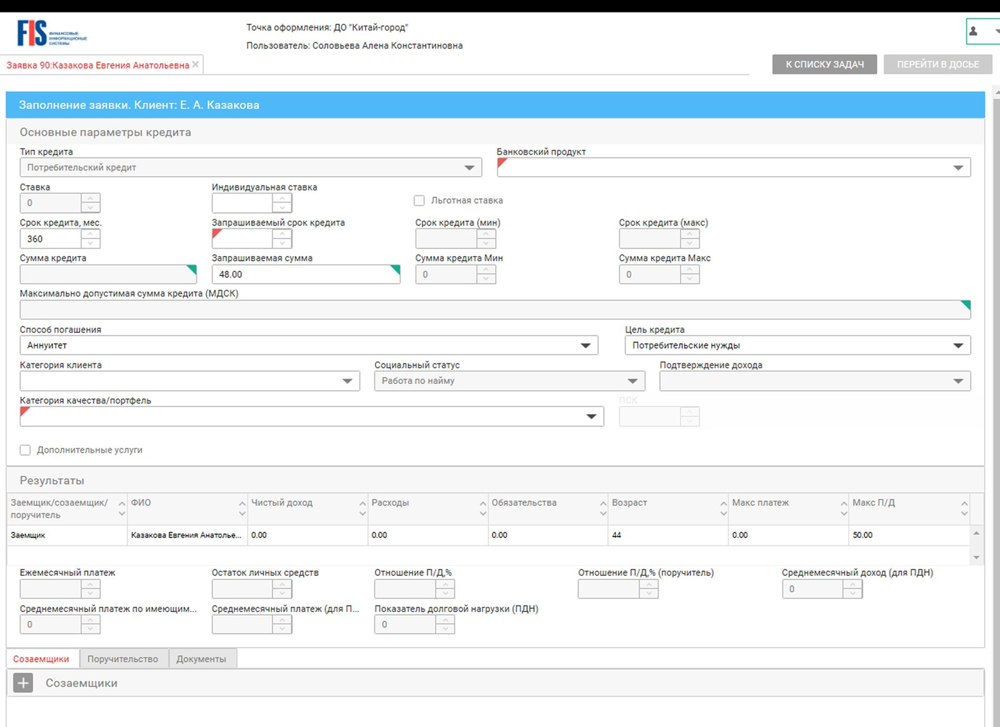
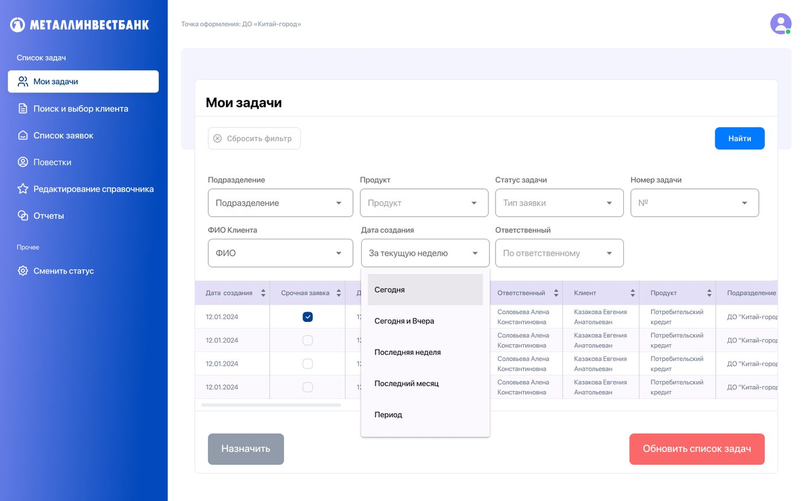
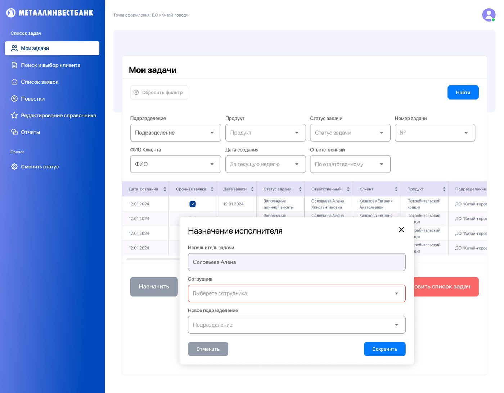
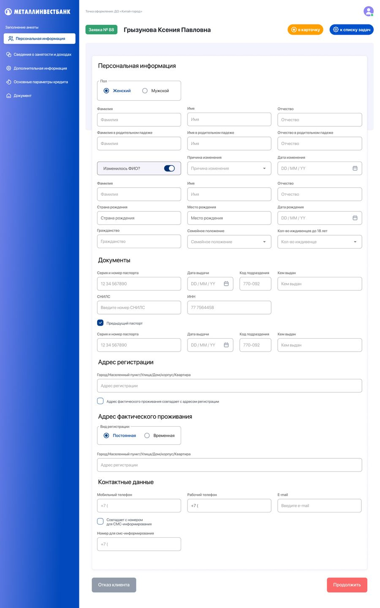
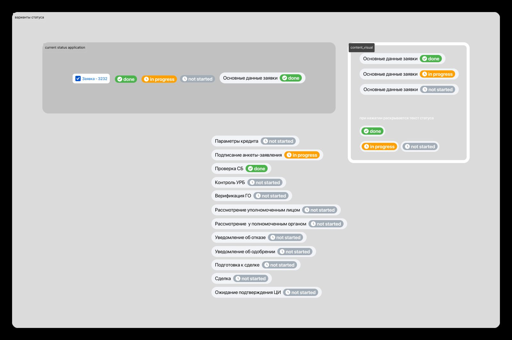

Enterprise · Web · Case Study
Редизайн CRM-системы для банковских сотрудников
Внутренняя CRM-система банка использовалась сотрудниками офисов для оформления кредитных заявок по входящим клиентам. Система была основана на сторонней платформе: перегруженный интерфейс, устаревшая типографика, отсутствие визуальной иерархии.
Задача банка — создать собственный инструмент на базе существующего, адаптированный под внутренние процессы и фирменный стиль.
На старте клиент сформулировал запрос: «сделайте ярко, используя наш фирменный цвет». Для потребительских продуктов это работает — но не для внутреннего рабочего инструмента.
Я объяснила: сотрудник работает в CRM весь день. Формы с десятками полей, таблицы с заявками, сложные статусы — при ярком насыщенном интерфейсе это создаёт высокую когнитивную нагрузку и визуальный шум. Инструмент должен помогать думать, а не отвлекать.
Предложила альтернативу: сдержанный, функциональный дизайн с аккуратной адаптацией под фирменный стиль банка и продуманной цветовой системой для статусов. Клиент согласился — и мы приступили к работе.
Исходная система — типичный enterprise-legacy: зелёный хедер сторонней платформы, поля набиты вплотную, нет чёткой визуальной иерархии. Пользователь вынужден самостоятельно ориентироваться в плотном потоке информации.


Два месяца плотной итерационной работы с менеджером со стороны банка. Процесс: они предоставляли скрины текущего интерфейса с комментариями что хотят улучшить — я пересобирала в новом дизайне, согласовывала, двигались дальше.
Аудит и переговоры
Изучила существующую систему, определила проблемные паттерны. Обосновала клиенту альтернативный визуальный подход — сдержанный интерфейс вместо яркого.
Компонентная база
Собрала UI Kit: цветовая система, типографика, инпуты, кнопки, бейджи статусов. Основа для согласованного масштабирования по всему продукту.
Итерационное проектирование
Экран за экраном: список задач → поиск клиента → заполнение анкеты → система статусов заявки. Каждый экран согласовывался до перехода к следующему.
Хендофф
Финальные макеты с описанием состояний, спецификациями компонентов и логикой переходов переданы в разработку.
Список задач и фильтрация
Главный рабочий экран сотрудника. Фильтры по подразделению, продукту, статусу, клиенту и дате. Сортируемая таблица с ключевыми атрибутами заявки. Модальное окно назначения исполнителя.

Заполнение анкеты — многошаговая форма
Один из самых сложных экранов: форма кредитной заявки с 5 шагами (персональная информация, занятость и доходы, дополнительные данные, параметры кредита, документы). Прогресс-навигация, условные поля, автозаполнение. Приоритет — читаемость при высокой плотности данных.

Система статусов кредитной заявки
Каждая заявка проходит цикл из 12 этапов: от подписания анкеты до подтверждения сделки. Три состояния — done, in progress, not started — с цветовой кодировкой, понятной без текстовых подсказок. Статусы видны в таблице и внутри карточки заявки.

- Спроектирован полный редизайн внутренней CRM с нуля — от концепции до хендоффа
- Убедила клиента отказаться от визуально перегруженного решения — продукт стал удобнее для ежедневной работы
- Выстроена компонентная система: единые паттерны форм, таблиц и статусов
- Спроектирована сложная многошаговая форма кредитной анкеты с условной логикой полей
- Разработана масштабируемая система статусов для полного цикла кредитной заявки